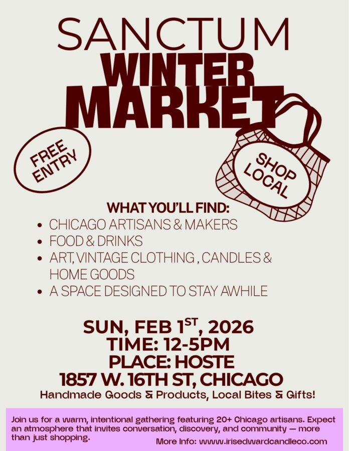

Sanctum Winter Market
Each edition of Sanctum will feature a refined selection of local artisans, creators, and brands who share a commitment to craft and story.
Expect design-forward products, sensory experiences, and unexpected moments of hospitality — all set within an atmosphere made for lingering.
We hope to see you there!